BarbecueNight.com
The Every Thursday Night Barbecue At Dick Flaharty's
The most recent Thursday, followed by the previous barbecues, for this page...
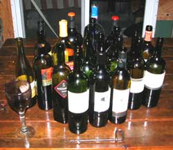
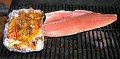
(Special note: If any of you folks who attend these functions want any different words uploaded, email the web slave. He is not literate, so he will usually copy and paste whatever you send.)
2 August 2007: Slab of Silver salmon fresh from WinterKing.com at Homer, and fresh Halibut of the same source with bell peppers and secret spices were first on the grill. The camera guy got into the wine before he remembered to get the photos of the full array of gourmet culinary artistry on the grill and table. The crew sent to Homer last weekend had way too much fun, survived, and want another Homer assignment. Their request will be reviewed by the bean counters, if any beans can be found to count.
A fine bottle of wine was hand delivered to Fairbanks from a small French winery, with stories of France. The Layer Cake wine was notable, of course. An obscure Spanish wine of superlative note was hand delivered from a boutique wine store in southern California. And a gaggle of other luscious wines upstaged the usual offerings.
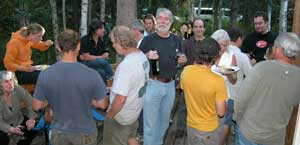
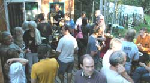
Representatives arrived from several countries, with certain stories outrageous even in Alaska. Some of the things they do in Amsterdam would add some much needed real life in the world of fear and hate-based governments such as the Washington DC DemocanRepublicrat Regime. The locals agreed with the international comments on the increasing perturbrances of the American government, on account as the malicious American Police State is perturbing Alaskans as much as the rest of the world. It will get worse. Power serves only itself, and never humans.
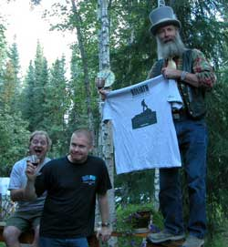
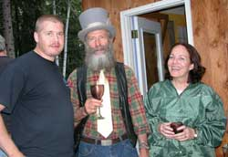
The sail boat crew from Germany left their boat in Chaguaranias Trinidad, or some such place on the south end of the hurricane zone among statistically fewer hurricanes, for the Alaska trip. Logan and Mo left their sail boat in Brazil, to get to BarbecueNight on time. Petra from somewhere in the world infused new knowledge into the group of more than 30 people. It was a nice evening to show up in Fairbanks, as usual. The best of Hollywood strives to duplicate some of the evening's production. Karl the Brit, still walking around the world, came back to Fairbanks from somewhere in eastern Russia to sell his t-shirts to get some money to get back to Russia to keep on walking. It is a British sort of expedition you know. The guy with the noticeably new yellow tie kept most of it free of wine and chocolate, most of it.Continued analysis of the current meteorological phenomena related to the anthropological data of Beringia (Alaska-Russia land bridge), a discussion led by certain University of Alaska sorts at the evening's primary seminar, as compared in sum with the new Simpson's movie, indicates an evolutionary cycle whose survival is dependent upon a new land bridge rebounding from the melting Greenland ice cap, across the Atlantic, to cycle beyond the previously successful but now failing American experiment usurped by the war mongering RepublicratDemocan Regime. Or something like that. Between comments about the garden fresh salads on the table, it was concluded that the current odds are a 70 percent chance that US President Dick Cheney and his side Kick, George Bush, will start a third war to make enough enemies to collapse the Washington DC Regime, at great profit for Haliburton executives, amid great social grief created by slaughtering people with war toys.
That is it for this Thursday, unless more is added.
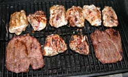
26 July: First off, the web slave is typing this Friday while riding in a pickup being somewhat driven by Dick Flaharty, careening down the mountain road in the middle of the Kenai Peninsula, on the way to the WinterKing.com at Homer, of all places, to acquire some halibut and salmon for the barbecue, of course. Rex and Holly emailed an offer we could not refuse. Something about a fun time, bring wine. Full report next Thursday. Now back to the actual Thursday Night Report....
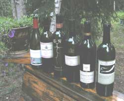
That was it on the grill for the night, moose and store partridge. Not enough Chitina dipnetters on scene yet.
Except for the Root 1 wine, a bit too young yet, brought by the cheap web slave, the wine selection was rather rewarding.
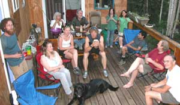
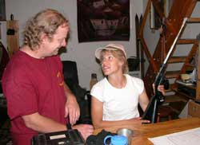
After the discussion about lawyers, of a nature you can easily ascertain, including one who expressly bragged and laughed about the fact that lawyers write and control the laws for great profit to them, there was some firearms discussion, for some odd reason.
Summer projects, and adventures we wish we were on, commanded the conversation.
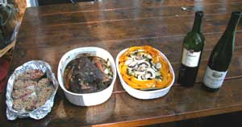
19 July: We started right out with the Copper River Red Salmon steaks, moose roast and layered vegi mix, with the first wine to show up.
The roast was prepared with a modicum of soy sauce and fresh ground black pepper, sliced garlic, some other things and certain bush herbs found in white birch moss bogs on west facing slopes just north of Fairbanks. The usual fare.
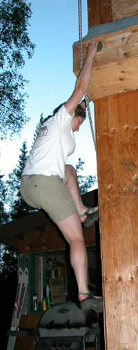
Maybe it was the wine, maybe it was the mixed vegis, or the herbs.
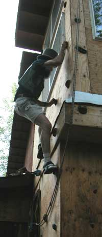
Rock Tevas and avoidance of the rope hazard.
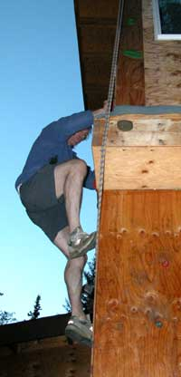
Ian of the Nome hinterlands offered a much sought-after report on the rock conditions north of Nome. The rocks themselves are more sought-after, but cost more to reach. Kristine, who remarkably continues to tolerate his adhesion to the vertical world, reported on the bountiful Nome king crab culinary arts which may effect a trip to Nome where the beaches are still laden with gold.
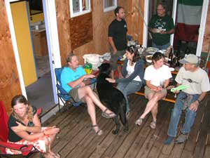
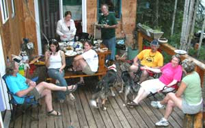
Danielle from Dutch Land and Duane from New Zealand, of all places, upgraded our repertoire of current international adventure scene knowledge, significantly. We offered the usual sound reasoning for getting out of Fairbanks as fast as they could to get to remote places where they could enhance their data base for high quality stories to be told when they arrive at the next party scene on their erratic route through the universe.
Logan offered some outrageous sailing stories from wherever in the world he left his sail boat this time.
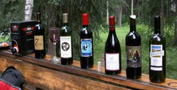
12 July: The evening's line-up. The Horizon's Edge - On The Fence (02 Cab Reserve), was superlative. Second bottle from the right. In fact, it was so good, get a case soon while there is still some not sold, if the wine maker (Yakima valley, Washington) gets his website uploaded, and let this web slave know where you will serve it. He will show up with the moose steaks if he can get there.
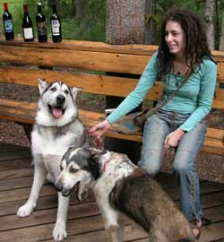
The canines were well behaved, after a couple serious dominance discussions and a shortening of the leash.
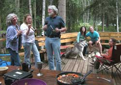
Discussed the latest ice reports from instrument sites on the Columbia Glacier. Everything is on schedule.
Well of course the glacier is melting. That is why we made it in the first place, to reserve future new mountain climbing routes. We are here now, and we want more vertical elevation for climbing. A 2,000 foot thick glacier makes 2,000 more feet of climbing when it is melted away from the base of the mountains. That is why we paid all those government planning commissioners back in the last ice age. It usually takes a few thousand years to get any value out of government planners, but that is better than most other government folks, especially the ones in Washington DC.
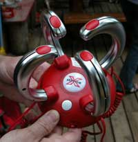
Then this thing came zinging through the trees, and landed.
Wires. Ominous.
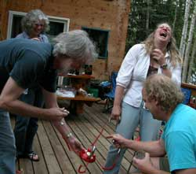 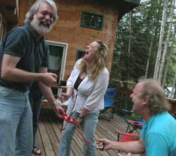
Things got out of hand.
Apparently it is some sort of game.
Not sure who won.
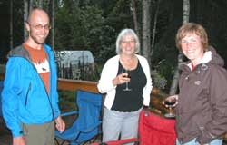
The Norway delegation brought new knowledge. Not sure if they found any here to take back.
28 June: We not only dragged the web slave and grillmeister back from Montana, despite the kicking and screaming, we made him bring good wine, and moose steaks, and then barbecue the steaks, and serve them.
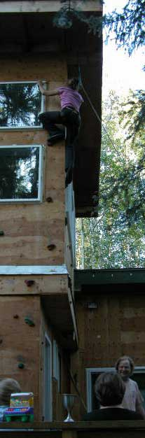
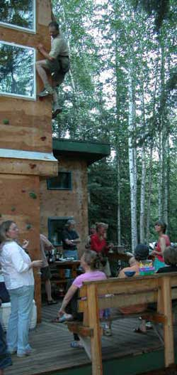
We had to endure his stories. The opalized wood was believable because he had the opalized wood with him. But the story about Sarah the beautiful California Physician's Assistant student, on the airplane, her bicycling in southern France a couple days before her first trip to Alaska for outdoor adventures with some local Air Force jet driver, was up for question, because they were not there to verify it. He will invent stories like that to make people think he can engage in normal conversation.
He drove some of the folks up the wall.
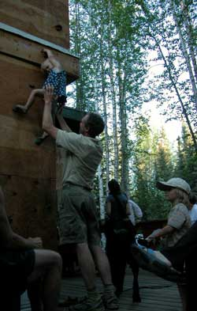
Even the kids were climbing the walls.
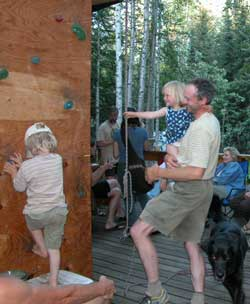
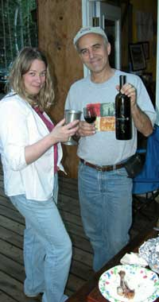
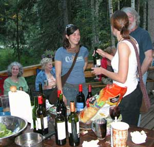
Besides the normally fine selection of vintage grapes, a luscious bottle of Bridgeman arrived. If you want to be popular at BBQnight.com, just show up with superlative wine. That technique works until the bottle is empty, so two bottles are recommended.
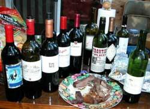
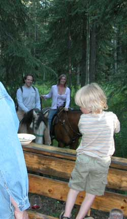 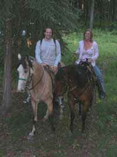
A princess and a knight without shining armor came through the forest.
They were lost, looking for a round table or something.
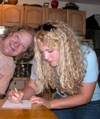
Another movie star showed up. Visiting Fairbanks, from a movie about being raised on an Eagle River, or something.
Dick begged for the autograph, and paid the photographer no small fee for the photo.
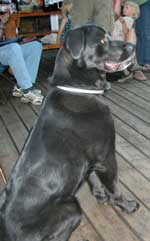 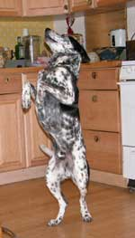
BBQnight.com usually has a few guests who are socially dignified, know tricks, and do not drink wine.
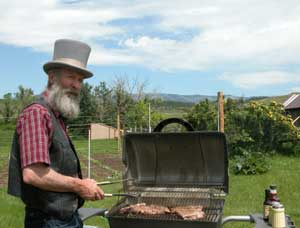
21 June: We sent the web slave hunter after the web slave, and caught him out a ways from Judith Gap Montana, at a grill, of course. Well, the web slave hunter got fed Judith Gap steaks on the Lee Ranch, and ended up listening to a lot of Montana ranching and hunting stories. They even took him on a ride through the ranch. Spectacular Montana plains and forest. Then the web slave hunter got back, with only one photo, without the web slave, but the hunter said that the slave would return to work, ah, soon.
May 2007: Here we go again. Delay. Delay. Delay. The web slave runs away to do some odd project. Something to do with the floating island he keeps talking about. But it is coincidentally in Yakima Valley wine country, and all we hear about is wine. (Tefft, Fedelitas, Sand Hill, Etceteras) Add to that the fact that the Barbecue Crew is also drinking wine instead of sending full reports to the web slave. So if you have a barbecue anywhere in the world, and conjure up some worthy rhetorical illusions with a photo or two, which meet the web slave's high standards, and send them to the web slave whose email is on the index page, your report will be uploaded. Otherwise, everybody waits for some island to float and the web slave to get run back north.
Page 3 August 07 ----- October
07
Page 4 October 07 ---- December 07
Page 5 January 08 ---- February 08
Page 6 February 08 --- March 08
Page 7 March 08 ------ September 08
Page 8 September 08 -- December 08
Page 9 December 08 --- May 10
Page 10 September 10 - Present
Page 1 November 06 --- April 07
Home
Links